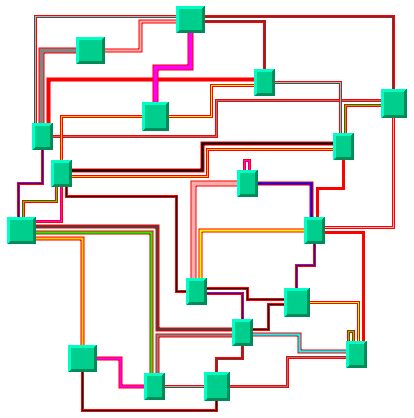
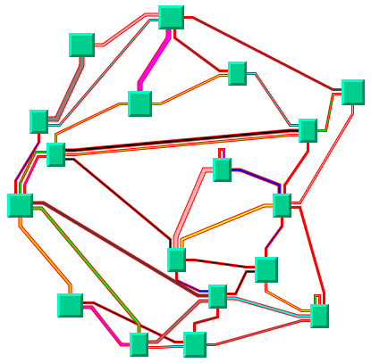

LL samples
These sample drawings were produced with the Link Layout
algorithm:

Link layout in short link mode with orthogonal links

The same graph in short link mode with direct links

Link layout in long link mode with orthogonal links
What types of graphs suit the LL?
Any type of graph where nodes are fixed and links need
to be routed:
- connected graphs and disconnected graphs
- planar graphs and nonplanar graphs.
- nested graphs with intergraph links
Application domains for the LL
Application domains of the Link Layout include:
- Electrical engineering (circuit block diagrams)
- Industrial engineering (schematic design diagrams, equipment/resource control charts)
- Business processing (entity relation diagrams)
- Software management/software (re-)engineering (data inspector diagrams)
- Database and knowledge engineering (sociology, genealogy)
- CASE tools (design diagrams)